10 Trees & Binary Trees
10.1 Trees
Introduction
Trees are a mathematical abstraction that play a central role in the design and analysis of algorithms because
- Trees are used to describe dynamic properties of algorithms.
- Trees are fundamental data storage structures that combine advantages of an array and a linked list.
- Searching as fast as array.
- Insertion and deletion as fast as linked list.
Definition
A tree is a nonlinear collection. It consists of
- A set of nodes that often represent entities.
- A set of edges/links that represent the relationship between nodes.
A tree T (rooted tree)
is empty tree
T=\emptyset
is a node r (called the root node) connected to a sequence of of disjoint trees {T_{1},T_{2},...,T_{m}} (called the subtrees) T=\left\{ r\to\left\{ T_{1,},T_{2},...,T_{m}\right\} \right\}
Tree vs. Subtree
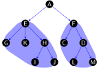
Terminology
In a tree
- Node: a simple object
- Edge/Link/Branch: a connection between two nodes
In a connection
Parent node: above a node
Child node: below a node
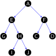
In a tree or subtree
Root node: node doesn’t have parent
Leaf node/External node: node doesn’t have children
Internal node: node has children
Sibling nodes: nodes have the same parent

Degree of node p deg(p)=\text{the number of children of }p
Degree of tree T \deg\left(T\right)=\max\left(\deg\left(p_{i}\right),p_{i}\in T\right)
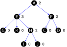Level/depth of node p: level\left(p\right)=\left\{ \begin{array}{cc} 0 & p=root\\ level\left(parent\left(p\right)\right)+1 & p\ne root \end{array}\right.
Height of tree T: height\left(T\right)=\max\left(height\left(T\to leftSubtree\right),height\left(T\to rightSubtree\right)\right)+1
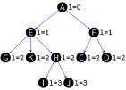Path: A path in a tree is a list of distinct nodes in which successive nodes are connected by edges in the tree. In a path p_{1}-p_{2}-...-p_{k} is path, node p_{1} is the ancestor and p_{k} is the descendant.
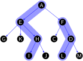
- The path length of a tree is the sum of the levels of all the tree’s nodes.
- The internal path length of a tree is the sum of the levels of all the tree’s internal nodes.
- The external path length of a tree is the sum of the levels of all the tree’s external nodes
M-ary trees
An M-ary tree is each node connected to an ordered sequence of M trees that are also M-ary trees
- linear tree/linked list: each node has only 1 subtree
- binary tree: each node has 2 subtrees
- ternary tree: each node has 3 subtrees
Parental trees
A parental tree is a tree where each node only keeps a reference to its parent node
The parental tree representation is used in numerous places:
- Prim’s algorithm: storing a minimum spanning trees of a weighted graph
- Dijkstra’s algorithm: storing the minimum paths in a weighted graph
- Tree search based AI algorithms in general
Visualsing trees
Seven visual representations showing the same tree dataset

Applications
The Bernoulli family tree
Animal tree
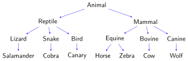Management tree
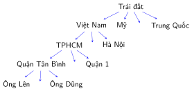Syntax tree of the sentenece “the cat sat on the mat”
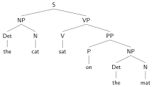Tree of the algebra expression (a+b)*(c-d)

A file directory on Linux OS
Structure of html file
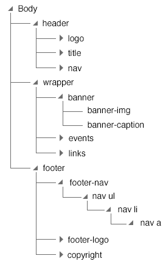Database
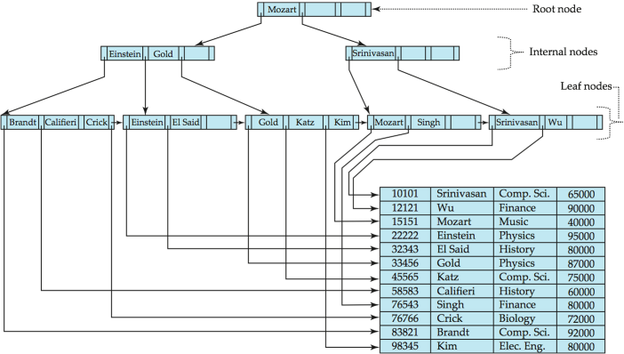
10.2 Binary Trees
Concepts
Binary Trees
A binary tree is each node connected to a pair of binary trees, which are called the left subtree and the right subtree of that node - Each node may have up to two successors, a left child node or a right child node.
- The concrete representation that we use most often is a structure with two links (a left link and a right link) for each node.
Binary-tree representation
struct Node {
Item item;
Node *left, *right;
};
typedef Node *link;Special Binary Trees
A full binary tree is binary in which each internal node has two children.
A complete binary tree is a binary tree in which - From level 0 to h-1: the tree is completely full (maximum number of nodes) - At the last level h: nodes are filled from left to right.
A perfect binary tree in which all internal nodes have two children and all leaf nodes are at the same level.
Number of nodes in binary tree
- size is the number of nodes in a binary tree/subtree T size(T)=size(T\to leftSubtree)+size(T\to rightSubtree)+1
| Level | Maximum number of nodes at each level |
|---|---|
| 0 | 2^{0}=1 |
| 1 | 2^{1}=2 |
| 2 | 2^{2}=4 |
| 3 | 2^{3}=8 |
| … | |
| 10 | 2^{10}=1024 |
| … | |
| l | 2^{l} |
Height in binary tree
- A binary tree/subtree T
height(T)=\max(height(T\to leftSubtree),height(T\to rightSubtree))+1
Properties of Binary Trees
A binary tree T
- The number of nodes at level l is
- at least 1 and
- at most 2^{l}.
- The of nodes in a binary tree of height h is
- at least h and
- at most 2^{h}-1.
- The number of leaf nodes in a binary tree of height h is
- at least 1 and
- at most 2^{h-1}.
- The height of a binary tree with N nodes is
- at least \log_{2}(N+1) and
- at most N.
- A binary tree with N nodes has N+1 null links and N-1 not null links.
Binary Tree API
Representing a Binary Tree
A binary tree is represented by a reference to its root node.
link root;An empty binary tree is represented with a reference whose value is null.
template <class Item> class BinaryTree { public: struct Node { Item item; Node *left, *right; Node(Item val) { item = val; left = nullptr; right = nullptr; } Node(Item val,Node *leftChild , Node *rightChild) { item = val; left = leftChild; right = rightChild; } }; typedef Node *link; private: link root; public: ... };
Traversal of Binary Trees
- A traversal of a binary tree is a systematic method of visiting each node in the binary tree. There are three binary tree traversal techniques:
- Preorder traversal
- Inorder traversal
- Postorder traversal
Preorder Traversal
Preorder traversal visits the root first, and then recursively traverses the left and right subtrees.
void preorder(link root) { if (root != nullptr) { visit(root); preorder(root->left); preorder(root->right); } }
Inorder Traversal
Inorder traversal recursively traverses the left subtree, then visits the root, and then traverses the right subtree.
void inorder(link root) { if (root != nullptr) { inorder(root->left); visit(root); inorder(root->right); } }
Postorder Traversal
Postorder traversal recursively traverses the left and right subtrees, and then visits the root.
void postorder(link root) { if (root != nullptr) { postorder(root->left); postorder(root->right); visit(root); } }
Draw tree
This recursive program keeps track of the tree height and uses that information for indentation in printing out a representation of the tree that we can use to debug tree-processing programs
void printNode(Item x, int h) { for (int i = 0; i < h; i++) cout << " "; cout << x << endl; } void printTree(link t, int h) { if (t == nullptr) { for (int i = 0; i < h; i++) cout << " "; cout << "* " << endl; return; } printTree(t->left, h + 1); printNode(t->item, h); printTree(t->right, h + 1); } void printTree() { printTree(root, 0); }
10.3 Binary Search Trees
Concepts
- Binary search trees are binary trees that organize their nodes to allow a form of binary search.
- Binary search trees work with values such as strings or numbers, that can be sorted.
- The idea is to store values in nodes so that small values are stored in the left subtree, and larger values are stored in the right subtree.
A binary search tree (BST) is a binary tree, at each node p,
Every key stored in the left subtree of p is less than the key stored at p.
\forall q\in\boldsymbol{LeftSubtree}\left(p\right):q.key<p.key
Every key stored in the right subtree of p is greater than key stored at p.
\forall q\in\boldsymbol{RightSubtree}\left(p\right):q.key>p.key
- A binary search tree

template <class Key, class Value>
class BST {
public:
struct Node {
Key key;
Value value;
int N, h;
Node *left, *right;
Node(Key key, Value value) {
this->key = val;
this->value = value;
N = 1; h = 1;
left = nullptr;
right = nullptr;
}
};
typedef Node *link;
private:
link root;
public:
...
};Tree API
Size & Height
int size() {
return size(root);
}
int size(link x) {
if (x == nullptr) { return 0; }
else return x.N;
}
int height() {
return height(root);
}
int height(link x) {
if (x == nullptr) { return 0; }
else return x.height;
}Search
Search. If less, go left; if greater, go right; if equal, search hit.
The strategy for checking if a binary search tree contains a key value key is recursive.
- Base case: if the tree is empty, search miss.
- Non base case: Compare key to the key in the root node x
- If key equals the value in the root, search hit and return value.
- If key is less, recursively check if the left subtree contains key.
- If key is greater, recursively check if the right subtree contains key.
Illustration

Searching 20 (search hit)
Insert
Insert. If less, go left; if greater, go right; if null, insert.
The strategy for adding (key,value) to a binary search tree is recursive.
- Base case: if the tree is empty, create a tree with a single node containing (key,value).
- Non base case: Compare key to the key value of the root node x
- If key is less, recursively add key to the left subtree.
- If key is greater, recursively add key to the right subtree.
Illustration
Built BST from keys {4, 3, 5, 1, 2, 7, 9, 8}. The initial is a empty tree.
Insert 4
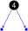Insert 3
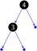Insert 5
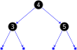Insert 1

Insert 2
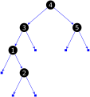Insert 7
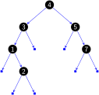Insert 9
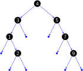Insert 8
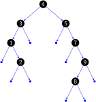
Tree shape
- Many BSTs correspond to same set of keys.
- Tree shape depends on order of insertion.
- Number of comparisons for search/insert is equal to 1 + depth of node.
- If N distinct keys are inserted into a BST in random order, the expected number of comparisons for a search/insert is \sim2\ln N
- Typical BST, built from 256 random keys
Minimum and maximum
Minimum. Smallest key in BST.
Maximum. Largest key in BST.
Floor
Computing the floor of key k
- Case 1 (k equals the key in the node): the floor of k is k
- Case 2 (k is less than the key in the node): the floor of k is in the left subtree
- Case 3 (k is greater than the key in the node): the floor of k is in the right subtree if there is any key \leq k in there; otherwise, it is the key in the node
Ceiling
Computing the ceiling of key k
- Case 1 (k equals the key in the node): the ceiling of k is k
- Case 2 (k is greater than the key in the node): the ceiling of k is in the right subtree
- Case 3 (k is less than the key in the node): the ceiling of k is in the left subtree if there is any key \geq k in there; otherwise, it is the key in the node
Rank and selection
Rank. How many keys < k ?
Select. Key has rank k ?
Delete min or max
To delete the minimum (maximum) key
- Go left (right) until you find a node with null left (right) link
- Replace that node by its right (left) link
- Update subtree counts
Delete (Hibbard deletion)
To delete a node with key k, search for the node t containing key k
- Case 1 (0 children): delete t by setting parent link to null
- Case 2 (1 child): delete t by replacing parent link
- Case 3 (2 children): find successor x of t (x has no left child); delete the minimum in t’s right subtree; and put x in t’s spot
and update subtree counts
Illustration
Deleting leaf node 4: Before deletion

Deleting leaf node 4: After deletion
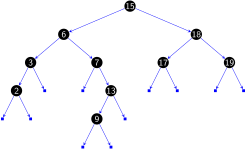Deleting node 7: Before deletion
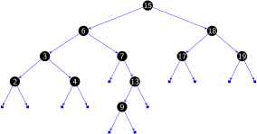Deleting node 7: After deletion
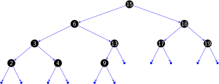Deleting node 15: Before deletion
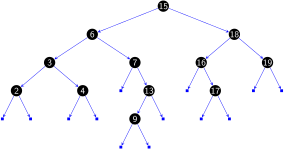Deleting node 15: After deletion
Hibbard deletion: analysis
- Unsatisfactory solution. Not symmetric.
- Surprising consequence. Trees not random \to\sqrt{N} per op.
- Longstanding open problem. Simple and efficient delete for BSTs.
Deletion: lazy approach
To remove a node with a given key:
- Set its value to null.
- Leave key in tree to guide search (but don’t consider it equal in search).
- Deleting node 15
Performance Characteristics
- Summary of Operations
| operation | BST |
|---|---|
| search | h |
| insert | h |
| delete | \sqrt{N} |
| min/max | h |
| floor/ceiling | h |
| rank | h |
| select | h |
| ordered iteration | N |
Cost summary for symbol-table implementations
| implementation | search (worst) | insert (worst) | remove (worst) | search hit (avg) | insert (avg) | remove (avg) | ordered iteration | key |
|---|---|---|---|---|---|---|---|---|
| unordered list | N | 1 | N | N/2 | 1 | N/2 | no | equal |
| ordered list | N | N | N | N/2 | N/2 | N/2 | yes | compare |
| ordered array | \log_{2}N | N | N | \log_{2}N | N/2 | N/2 | yes | compare |
| BST | N | N | N | c\log_{2}N | c\log_{2}N | \sqrt{N} | yes | compare |
| goal? |
Note: c=1.39
10.4 Workshop
Quiz
What is a tree?
What is a binary sreach tree?